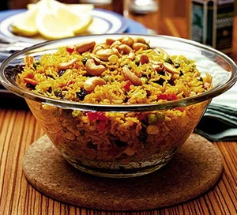

Butter Chicken

This tasty Indian-inspired dish is faster than a takeaway
Ingredients needed
- 250g basmati rice
- 400g special mixed frozen vegetables
- a generous handful of raisins
- 1 vegetable stock cube
- 2 tbsp korma curry paste
- a generous handful of roasted salted cashew nuts
Method
-
Boil the kettle. Get out a large microwaveable bowl and pile in the rice, veg and raisins.
-
Pour 600ml/1 pint boiling water over the rice mixture and crumble in the stock cube,
then stir in the curry paste. Cover the bowl with cling film,
leaving a small gap at the side to let out the steam.
Cook on full power (850 watts) for 12 minutes if your microwave is less powerful,
add 2 minutes.
-
Remove from the microwave and stand, still covered,
for 5 minutes to complete the cooking if you don’t let it stand the rice will be too nutty.
Fluff up the rice, scatter with cashews and serve.